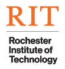

Software Engineer specializing in Python and TypeScript with expertise in LLM/agentic systems, RAG, and model optimization. Delivered production-grade AI/ML services using FastAPI, PyTorch, and TensorFlow at Paradigm Study, and built scalable React/Next.js dashboards for real-time interaction.
Engineered an LLM distillation framework optimizing teacher-student models for inference efficiency; achieved ~18% improvement in perplexity over untrained student models.
Web application to produce LLM-driven educational videos in 5+ languages, making STEM education accessible globally.
RAG chatbot with end-to-end data ingestion and query pipeline for intelligent product recommendations and customer support.
Built a pandas pipeline to scrape/cleanse text data for real-time sentiment analysis and stock trend prediction.
